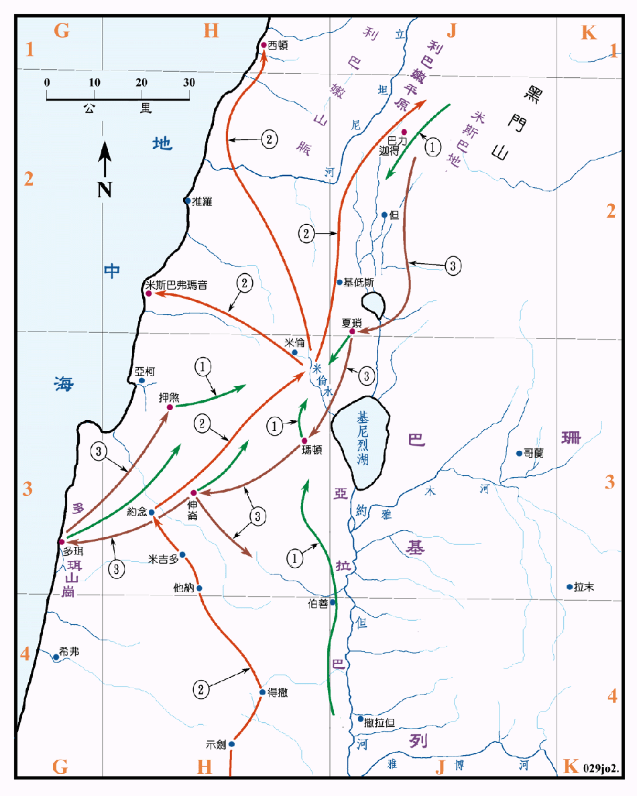

1406～1360BC

行动线说明
| 序号 | 圣经 | 说明 |
|---|---|---|
| 1 | 书11:1-5 | 夏琐王招集了玛顿、伸仑、押煞、北方、山地、基尼烈南边的亚拉巴、高原，西边多珥山岗的诸王，又去见东方和西方的迦南人、山地的亚摩利人、赫人、比利洗人、耶布斯人、并黑门山根的希未人，到米伦的水边安营，以抵挡以色列人。 |
| 2 | 书11:7-8 | 以色列人从南方进兵攻击，在米伦的水边击败了北方的联军，并追赶到西顿大城，到米斯利弗玛音，直到东边米斯巴平原。 |
| 3 | 书11:10-12 | 以色列人又转回，夺了夏琐和北方诸城。 |
圣经并没有记载以色列人是经由那一条路线到达米伦水边的。
曾在示剑城的以巴路山和基利心山 坛献祭，并且击杀了得撒、他纳、约念和米吉多等王，故可假设是走的这一条路。在米伦水边的一战，夏琐王是结集了所有北方的迦南人，人数众多，是决定性的一战，以色列人大胜，并且乘胜追击到全北境。然后转回夺取了北方的诸城。
夏琐是迦南北部的重镇，地处由大马色进入迦南的门户，是当时政治、经济和军事的中心，人口稠密，商业发达，城防坚固，城的面积可能到达六十公顷，是当时极大的一座城，从它能号召北部的各城联合作战，足证其势力甚强，居於领导的地位。